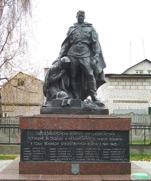
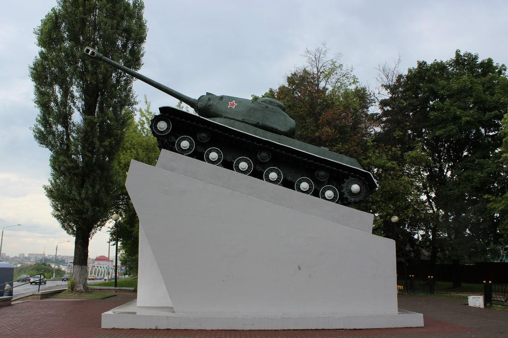

|  |
Скульптура «Скорбящая женщина и солдат»
Братская могила. Похоронено 325 воинов Красной армии (приведены имена 109 человек), павших в боях в июне-июле 1944 г. при освобождении г. Борисова и Борисовского р-на от немецко-фашистских захватчиков. |
 |
Стела «Жертвам фашизма».
Братская могила. Похоронено около 10 тыс. воинов Красной армии, казненных, а также умерших от голода и болезней в лагере Шталаг № 382, созданном в г. Борисове немецко-фашистскими захватчиками в период оккупации региона (июль 1941 – июнь 1944). |
|  |
Памятник «Танк на пьедестале»
В увековечение подвига танкового экипажа (А.И. Данилов, А.А. Петряев, П.Н. Рак), павшего в бою 30 июня 1944 г. при освобождении г. Борисова от немецко-фашистских захватчиков. |